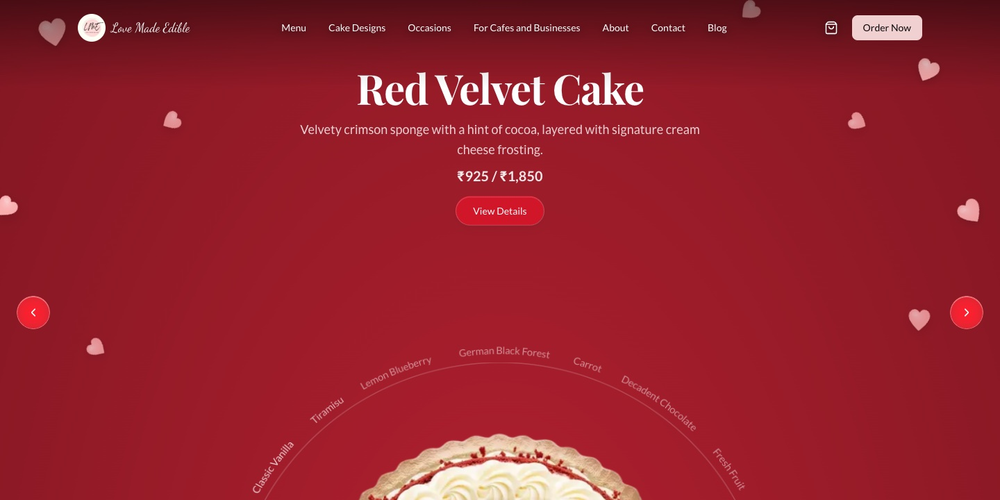
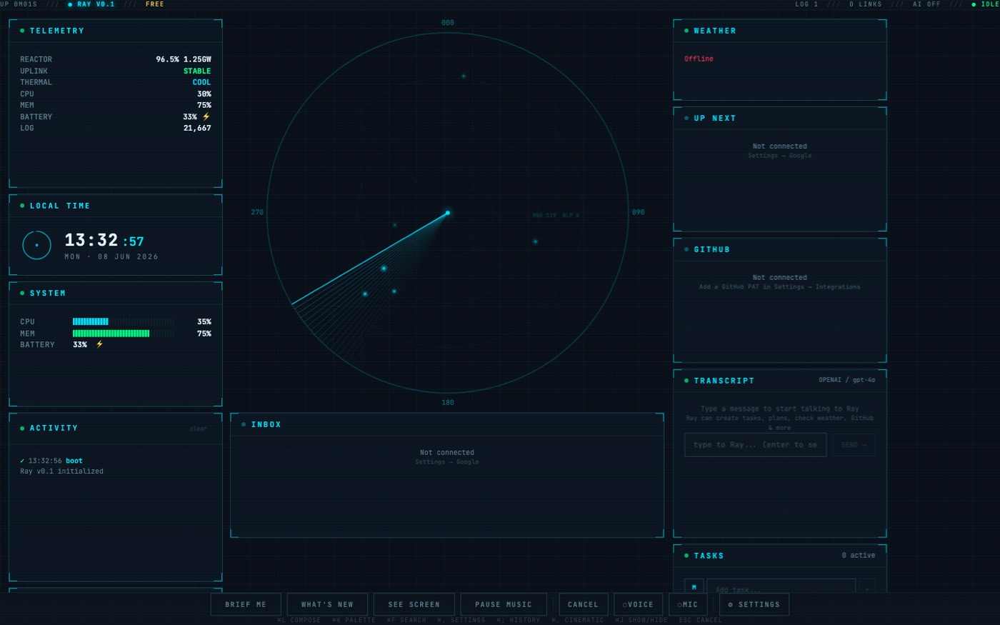
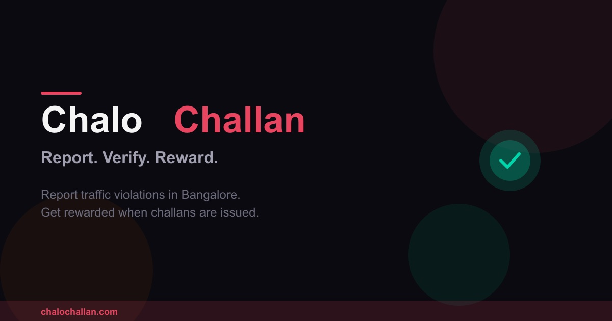

Independent Builder — Personal Goal Pursuit · Bengaluru
I build products that are
hard to explain
until you can use them.
AI-native products, creative tools, and production systems — from voice-first
worlds and agent-controlled Android to inference platforms operating at scale.
A voice-first story that listens back and paints itself around the player. A live narrator, interruptible speech, multi-character voices, and a high-throughput image pipeline turn every playthrough into its own world.
Personal research · Android systems2026 · Active research
Mod OS
02 / 09
An agent-controllable Android stack: observe the accessibility tree, reason locally, and act through a structured daemon and CLI. Verified end to end on an emulator, with an on-device Gemma loop and a path toward a custom ROM.
Android
Kotlin
Gemma
JSON-RPC
Accessibility
Working prototype
ಮೂಲ ದಾಖಲೆ · Kannadaಕಾನೂನು ದಾಖಲೆ
→
Working view · EnglishLegal document
Desktop AI · Indic workflows2026 · Working prototype
Setu
03 / 09
An Indic AI desktop studio for the documents Indians actually work with. It reads scanned legal files, detects language, runs OCR and translation, and lets an agent orchestrate the workflow without pretending a demo is live.
Tauri
React
Sarvam AI
Agent tools
Playwright
In production

Commerce platform · Bakery business2026 · In production
Love Made Edible
04 / 09
A digital operating surface for a Bengaluru bakery: interactive menus, ordering journeys, consulting, learning content, analytics, and search-led discovery brought together as one evolving business system.
3D creative SaaS · Bakery operations2026 · Active build
Cake Studio
05 / 09
A browser-based 3D cake design studio for working bakers. Build multi-tier cakes, shape coatings, place decorations, create piping motifs, save versions, undo changes, and turn a visual design into an operational quote.
React Three Fiber
Next.js
Three.js
Postgres
Better Auth
Pre-launch
Ask once · Taste first
What should we watch?
◉
Recommendation system · Consumer product2026 · Pre-launch
GoodWatch
06 / 09
A movie recommendation system that starts with taste, mood, and streaming availability — not a popularity list. The engine combines intent classification, semantic retrieval, explainable lenses, and first-party preference signals.
FastAPI
pgvector
Gemini
BGE-M3
OpenTelemetry
v0.3

Desktop assistant · Local workspace2026 · v0.3
Ray
07 / 09
A JARVIS-inspired desktop command center where chat, tasks, plans, weather, system telemetry, and Google tools live together. Widgets move freely and releases update through a signed channel.
Tauri
React
TypeScript
Local-first
Tool use
Field experiment

Civic technology · Public experiment2026 · Field experiment
ChaloChallan
08 / 09
A citizen reporting experiment for traffic violations in Bengaluru. Evidence is checked, outcomes are tracked, reporters stay private, and rewards are tied to confirmed action rather than uploads.
Image lineage observability for generative systems. It records generation, edit, and variation flows as a searchable graph, with ingestion SDKs, asynchronous processing, OpenTelemetry support, and an operations UI.
From December 2023 to May 2026, I worked across the product and platform
layers behind AI creation tools — from the interface to the inference fleet.
11% → <1%generation failures
5×targeted performance gain
30%+infrastructure cost reduction
320 hrsmonthly work automated
A
Product systems
AI creator suite
Led product engineering across Studio, Frameo AI, Remix, and Frameo Pro —
evolving image generation into complete video and audio storytelling workflows.
React
TypeScript
Streaming UX
Agent workflows
B
Platform systems
Inference & ML platform
Built and improved model dispatch, queue-based pipelines, spend tracking,
retries, autoscaling, and multi-provider inference across the gateway and ML stack.
Python
Kubernetes
Redis
LiteLLM
C
Business systems
Billing & operations
Shipped organization plans, subscriptions, checkout, revenue analytics, and
administrative tools that connected product usage to dependable business operations.
Payments
Analytics
Admin systems
Reliability
Public-safe summary of work I directly contributed to. No private code,
customer data, or internal system details are shown.
03 / Origin log
The path before the current chapter.
I did not arrive at software through a straight line. The through-line is
building systems, teams, and businesses around difficult real-world problems.
Creator — Interview Prime · Director — Business Head — Platforms Engineering
and Outcomes · Director Curriculum · Lead Software Development Engineer ·
JavaScript Developer · Technical Faculty MERN, SDE
Progressed from technical faculty and Lead SDE to Director of Curriculum,
then Business Head for Platforms Engineering and Outcomes. Built learning
programs, led large multidisciplinary teams, and turned recurring operating
problems into internal products.
AI interviewer · 2,600+ interviewsDesigned to scale to 30k / monthFraud reduction · 90%Curriculum org · ~80 people
Built applications on a custom wireless-mesh stack for agriculture, cold
chain, asset tracking, water, grain storage, and factory operations — while
helping clients turn ambiguous requirements into working systems.
IoT systemsWireless meshClient delivery
2016—2019
HUNGRY TABLE
Learned the founder job on the ground
Co-Founder
Co-founded and operated a food-and-beverage business, owning finance,
marketing, daily operations, and a team of 8–12. A practical education in
customers, cash flow, people, and the distance between an idea and a business.
Worked across product design, additive manufacturing, 3D printing, injection
moulding, and contract manufacturing. Helped take client concepts from sketches
to manufacturable objects and later moved the business toward online commerce.
Product designManufacturing3D printing
04 / Build log
More experiments, fewer pitch decks.
Smaller products, operational tools, and open-source contributions. Some ship;
some answer a question and make room for the next one.
01 · 2026
Personal Finance Agent
A local-first finance assistant over Actual Budget, available through web, Telegram, and voice notes.
Private build02 · 2026
StoreChef
Multi-tenant inventory and kitchen-store operations for hospitals, with a Go API and Postgres source of truth.
Phase 103 · 2026
Mint
AI recruiting platform for job workflows, candidate matching, interviews, invitations, and reporting.
Product build04 · 2026
Kite Trading Agent
File-based market research and signal agent with explicit risk gates, journaling, and live execution disabled by default.
Research05 · 2026
Route Weather Planner
Driving-route planning with hourly Open-Meteo forecasts mapped to the journey.
Prototype06 · 2026
Bakery Calculator
Operational dashboards and calculators for the Love Made Edible business stack.
Internal tool07 · 2026
Hermes Agent
Open-source contribution preventing email loops by rejecting non-allowlisted senders before dispatch.
OSS contribution
05 / Contact
Building something strange and useful?
I like ambitious product problems, fast feedback loops, and teams that care
about the last ten percent. Tell me what you are trying to make real.